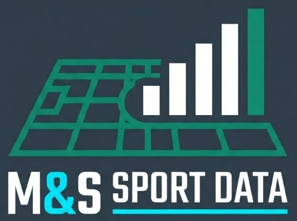

ASISTENCIA PROMEDIO ↗
86%
Participación semanal estimada

Explorar demoFÚTBOL FORMATIVO · CALI, COLOMBIA
Un sistema inteligente de soporte a la toma de decisiones para transformar los datos cotidianos del fútbol formativo en mejores conversaciones, seguimiento y planificación.
En una escuela formativa, la información sobre asistencia, categorías, torneos, cargas y desarrollo psicomotor suele quedar repartida entre planillas, hojas de cálculo y la experiencia del cuerpo técnico. M&S SPORT DATA propone ordenar esa información para convertirla en evidencia útil y oportuna.
El propósito no es reemplazar el criterio de entrenadores y directivos: es darles una base común para observar procesos, anticipar necesidades y acompañar mejor a cada deportista.
Puede fortalecerla al centralizar los registros del club y convertir la información de asistencia, categorías, cargas, rendimiento y desarrollo psicomotor en indicadores, reportes y alertas oportunas. Así, directivos y entrenadores podrían contar con una visión compartida para planificar, reconocer aspectos que requieren seguimiento y ajustar decisiones con evidencia, complementando siempre el criterio técnico. Esta respuesta es una propuesta del anteproyecto: deberá contrastarse y validarse con la comunidad del club.
Diseñar un sistema inteligente de soporte a la toma de decisiones que centralice indicadores deportivos y operativos para apoyar la gestión del club.
Explora cómo podría verse un tablero de seguimiento para el equipo formativo.
Revisar continuidadObservar asistencia reciente y conversar con el deportista.
PARTICIPACIÓNPlanificar recuperaciónContrastar carga percibida con la planificación de la semana.
CARGARegistrar avancesDocumentar observaciones de coordinación y habilidades motrices.
DESARROLLOPrototipo visual con datos sintéticos. No representa registros reales del club ni genera diagnósticos; los criterios deben validarse con el cuerpo técnico.
Un tablero de referencia para abrir conversaciones, no para etiquetar deportistas.
Los indicadores propuestos organizan la información en dimensiones comprensibles para las personas que acompañan el desarrollo deportivo.
Asistencia por deportista, categoría, entrenador y periodo; participación en sesiones, encuentros y torneos.
Seguimiento de sesiones, percepción del esfuerzo y observaciones de rendimiento para apoyar la planificación.
Registro progresivo de habilidades y observaciones formativas, interpretadas con criterios pertinentes a cada edad.
Señales descriptivas para priorizar revisiones y preguntas; siempre contextualizadas por el equipo técnico.
La propuesta centraliza registros operativos en una base de datos relacional. Desde allí, los datos pueden convertirse en indicadores, reportes y alertas descriptivas para apoyar decisiones informadas.
Un anteproyecto aplicado al contexto real del club, con una ruta gradual desde el diagnóstico hasta el diseño conceptual del sistema.
Población de referencia: comunidad deportiva del C.D. Héctor Cárdenas (deportistas, entrenadores y directivos). La selección y el tamaño de la muestra se precisarán según el diagnóstico, la disponibilidad de participantes y los criterios del anteproyecto.
Reconocer procesos actuales, fuentes de información, necesidades y oportunidades de mejora del club.
COMPRENDERDefinir variables de seguimiento y un catálogo de KPIs pertinentes al contexto del fútbol formativo.
ESTRUCTURARDiseñar la arquitectura conceptual, los reportes y las vistas de soporte a la toma de decisiones.
PROPONERReferentes conceptuales sugeridos para analítica, indicadores deportivos y desarrollo del deportista.
Referencias de apoyo para el marco conceptual; deben contrastarse y completarse con la bibliografía final del anteproyecto.